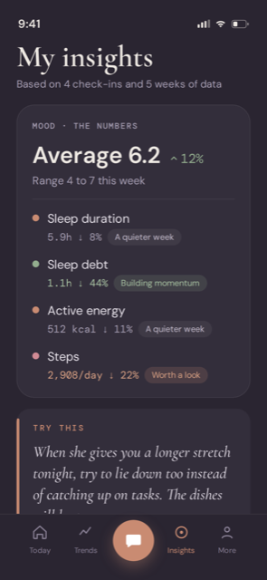
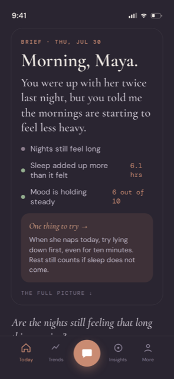
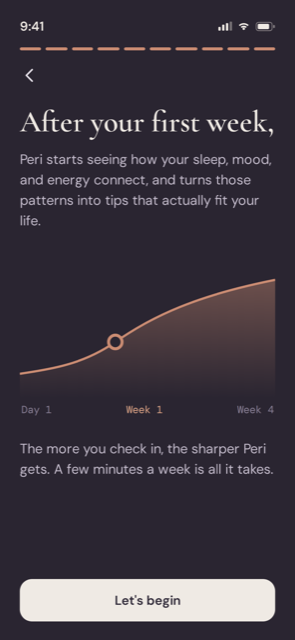
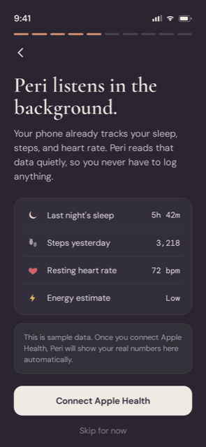
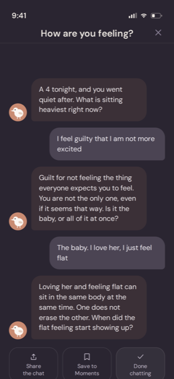
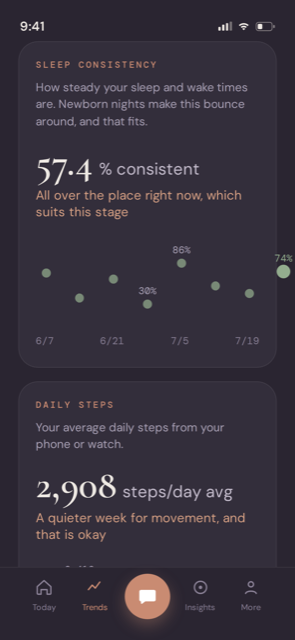

Every morning
A gentle read on your day
A short brief each morning, made for how you actually feel.
For new and expecting moms
A short brief each morning, warm check-ins whenever you need them, and a gentle look at how you are really doing. Made for how postpartum actually feels.
Free to download. Nothing to set up on day one.


Every morning
A short brief each morning, made for how you actually feel.
Over time
Peri surfaces the small wins you cannot always feel.
Week by week
A few minutes a week, and the tips start fitting your life.

In the background
Peri reads your sleep, steps, and heart rate quietly. Nothing to log.

Any hour
Warm, judgment free check-ins whenever the night feels long.

Your patterns
Sleep and movement over time, with no pressure to be perfect.

Download Peri, and see what tomorrow morning looks like.